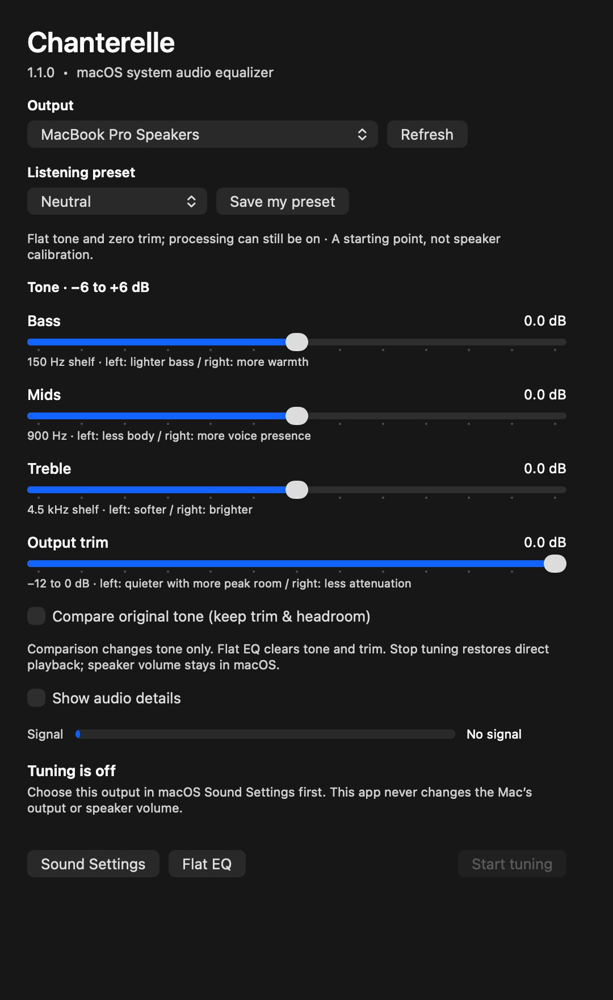

Bass
Add a little body or soften a boomy mix with a low shelf near 150 Hz.
−6 dB150 Hz+6 dB
A FREE, OPEN-SOURCE MACOS EQUALIZER
A little more warmth. A little less boom. Chanterelle brings simple tone controls to your Mac’s system audio, right from the menu bar.
Version 1.1.0 · Apple silicon · macOS 14.2+
Free to use. No account. No subscription.
Native macOS controls
Bass, mids & treble
Your audio stays on your Mac
THE NATIVE APP
Choose a preset. Make a small adjustment. Get back to the music, conversation, or game you came for.
Chanterelle uses familiar native controls and starts with tuning off. You decide when to listen through it.
Meet the app
JUST ENOUGH ROOM TO EXPLORE
Start with Neutral and something you know well. A few gentle changes can go a long way.
Add a little body or soften a boomy mix with a low shelf near 150 Hz.
Give voices a little more space with a broad band near 900 Hz.
Ease a sharp edge or bring out detail with a high shelf near 4.5 kHz.
A starting point for every day. Listening presets cover music, speech, gaming and gentler tone. Save one custom preset to come back to. These are adjustments by ear; no measured speaker calibration is claimed.
Room for the peaks. Boosts reserve headroom automatically. Output trim offers up to 12 dB of reduction. Compare original tone keeps trim and headroom; Stop tuning restores ordinary playback.
READY WHEN YOU ARE
Chanterelle 1.1.0, build 5, for Apple silicon and macOS 14.2 or later.
Developer ID signed & Apple notarized.
Download SHA-256 checksums
Prefer to build it yourself? The build guide covers Xcode, Command Line Tools and local signing. Chanterelle is MIT licensed.
Extract the ZIP, read INSTALL.md and open Chanterelle.app. Confirm macOS’s first-open prompt.
Select your supported stereo output in macOS Sound Settings and the same output in Chanterelle. It must already be your Mac’s default.
Click Start tuning and approve system audio capture if asked. Begin with Neutral at a comfortable volume. Every launch starts with tuning off.
COMFORTABLY LOCAL
System playback is processed in memory on your Mac. No audio recordings, network transmission, analytics, microphone capture or screen capture. Your tone settings, output preference and one preset are saved locally.
Read the privacy detailsBuilt with AppKit, Core Audio and in-tree stereo DSP. Apple frameworks power the runtime, with no third-party runtime libraries. Free and open source, with no paid tiers or account to create.
Look around on GitHubA FEW PRACTICAL BOUNDARIES
Chanterelle works with supported stereo outputs, including LG display speakers. It’s an independent project, with no LG endorsement or model-specific acoustic correction.
Compatibility & validation evidenceGOOD TO KNOW
Stop tuning and confirm ordinary playback works. Check your default output and system audio capture permission in Privacy & Security. Quit and reopen after permission changes. Some protected or directly routed audio may not be captured.
Click Stop tuning or Quit. Compare original tone removes tone adjustments while keeping trim and headroom. Flat EQ zeroes tone and trim without changing whether processing is running. Live quit, force-quit, disconnect and sleep recovery still require hardware acceptance.
Yes. It’s free, open-source software under the MIT license. There are no subscriptions or paid tiers. You can inspect, modify and build the source yourself.
Read the support page for setup and troubleshooting, or open a GitHub issue to report a bug or suggest a feature. Review diagnostics before sharing them.